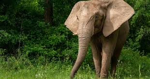
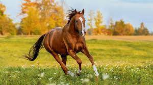

The shark, a powerful predator with sleek form and sharp teeth, dominates the oceans with unmatched hunting prowess.
Read more
The giraffe, with its long neck and graceful stature, epitomizes the beauty and uniqueness of African savannas.
Read more
The lion, majestic and fierce, reigns as the king of beasts with its golden mane and powerful presence.
Read moreElephants are the largest land animals, known for their long trunks, large ears, and strong social bonds.
Read moreHorses are fast, strong mammals known for their agility, intelligence, and long-standing partnership with humans in various activities.
Read more